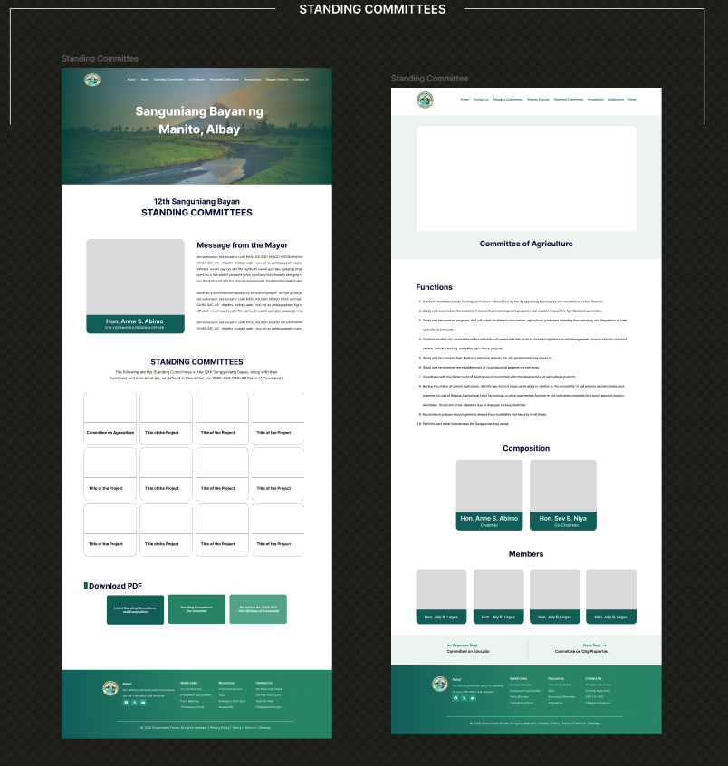
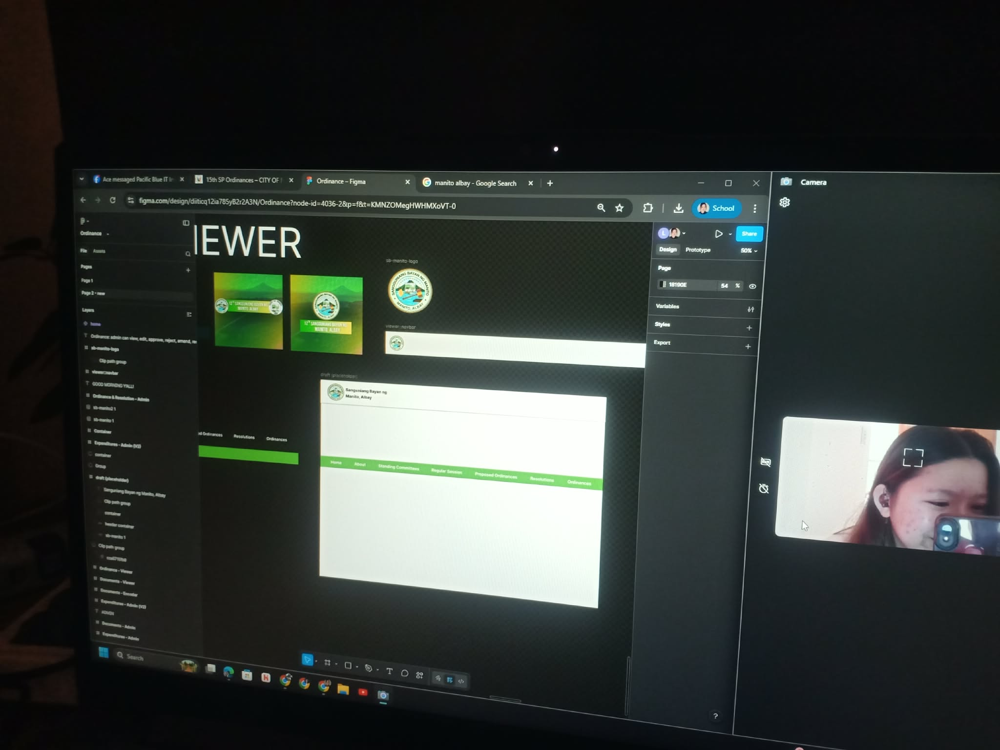
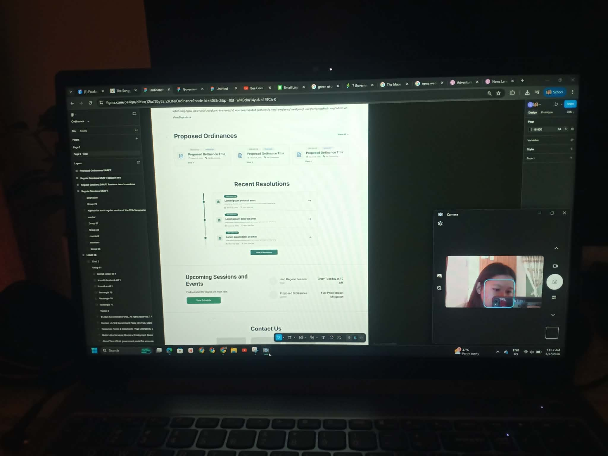
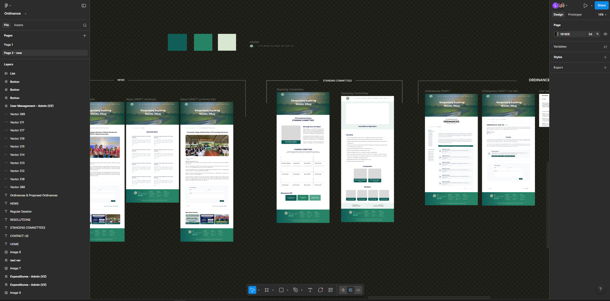
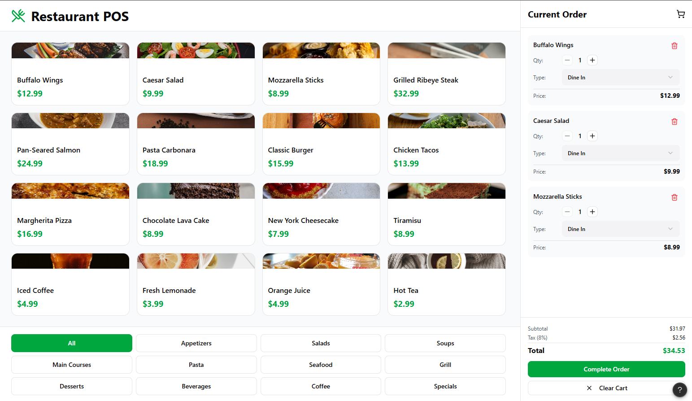
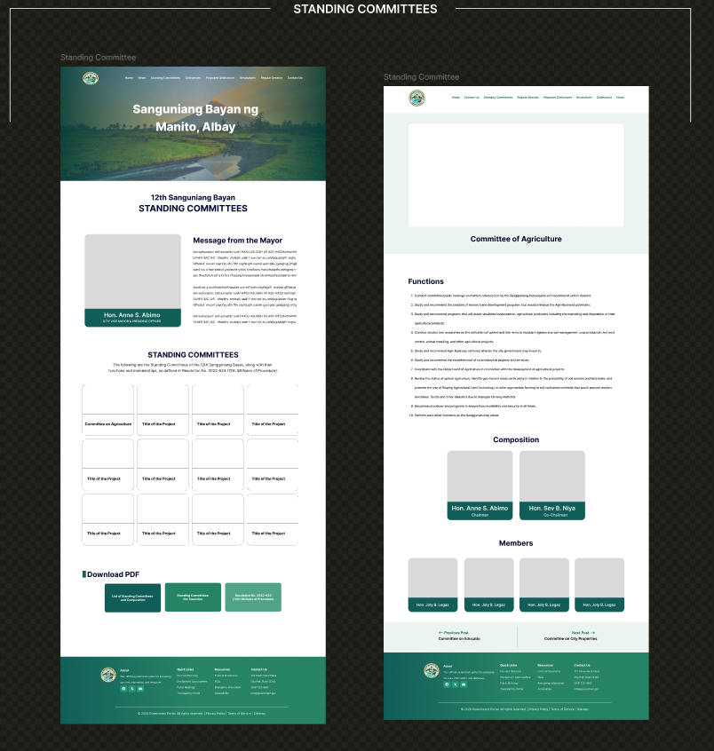

During this week, we conducted a presentation of the current progress of the system development, where implemented features and updates were discussed and evaluated. The feedback and suggestions provided during the presentation became a guide for further improvements and refinements to the system.
Aside from the POS project, I was also assigned to contribute to the Ordinance UI project using Figma. My tasks focused on creating and improving interface layouts for different sections of the system while ensuring that the designs remained visually organized, consistent, and user-friendly. I also worked on enhancing the navigation structure and maintaining layout consistency across both the Admin and Encoder interfaces.
Additionally, I contributed to improving the overall structure and appearance of the ordinance pages by organizing content sections and refining the interface design to create a cleaner and more professional user experience. Through collaboration with my teammates, I continuously reviewed and refined the layouts to maintain consistency and improve usability throughout the system.





